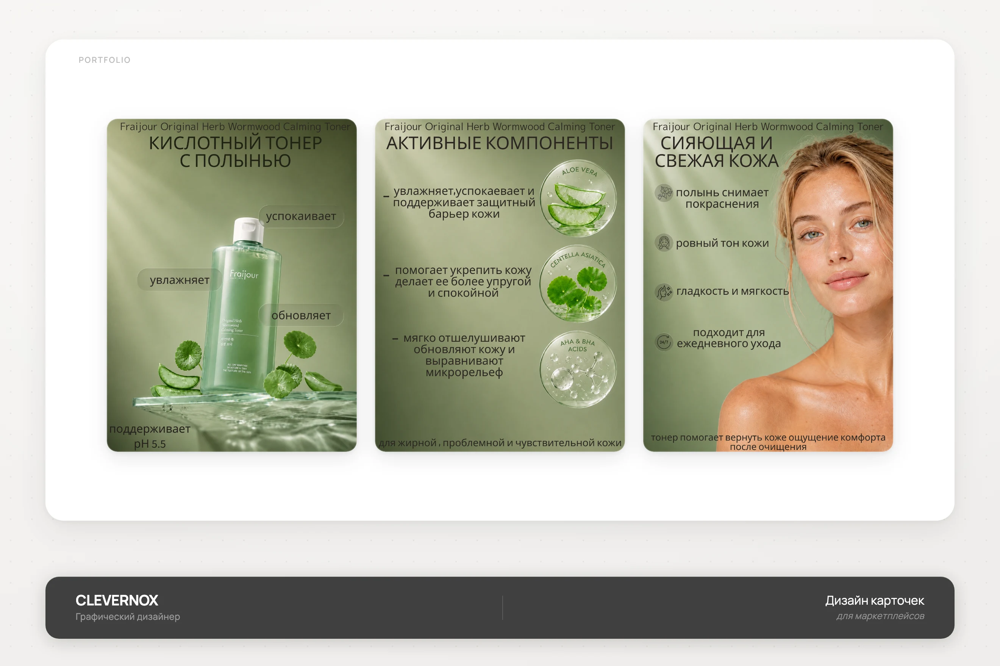
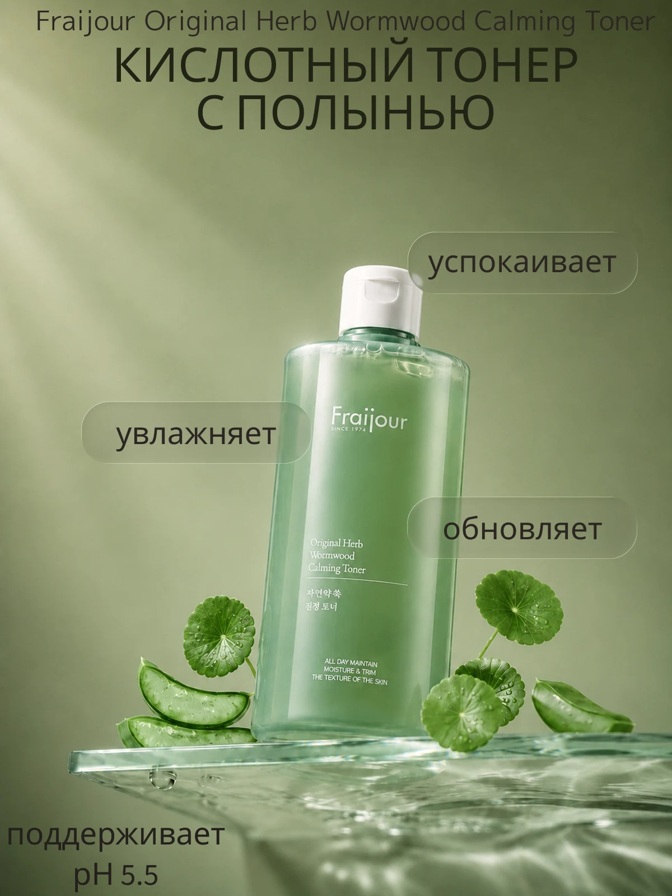
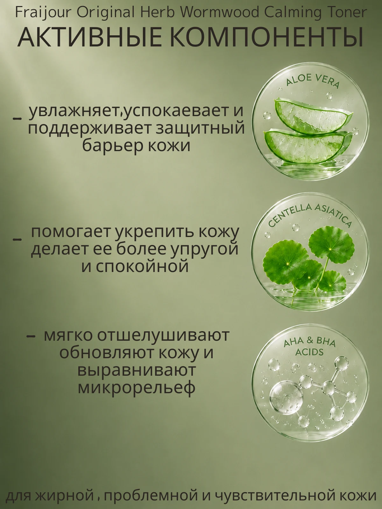
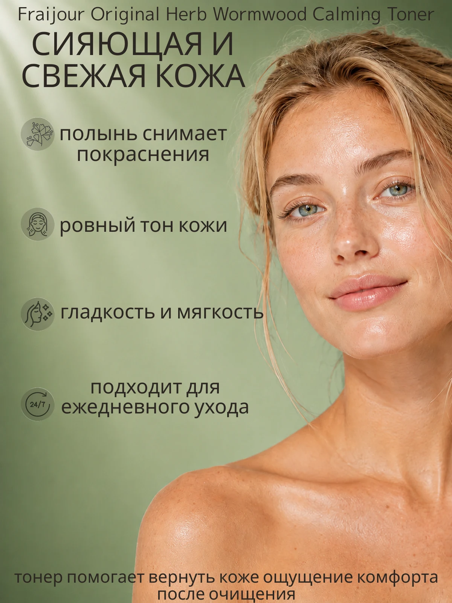

Fraijour
Серия инфографических карточек для кислотного тонера с полынью Fraijour: продукт, активные компоненты и результат для кожи.

- Клиент
- Fraijour — корейский бренд косметики
- Задача
- Разработать серию карточек товара для маркетплейса под кислотный тонер с полынью: главный слайд с продуктом, активные компоненты состава и ожидаемый результат для кожи — в едином приглушённо-зелёном стиле линейки.
- Роль
- Графический дизайнер: концепция серии, инфографика, типографика, компоновка предметной и портретной съёмки, подготовка под формат карточек маркетплейса.
К-бьюти категория на маркетплейсе конкурирует через ощущение «настоящей формулы» — покупатель ищет не красивую бутылочку, а понятный состав и эффект. Поэтому вся серия держится на глубоком зелёном фоне и предметной съёмке с растительными ингредиентами прямо в кадре — алоэ, центелла — это визуально подтверждает состав ещё до чтения текста.
Первая карточка вводит продукт через плавающие подписи-«пузыри» прямо у флакона («увлажняет», «успокаивает», «обновляет») — так эффекты читаются как естественно исходящие от самого тюбика. Вторая раскладывает состав по трём активным компонентам с макро-иллюстрациями в стиле лабораторных чашек Петри — это более наукообразная подача, важная для тонера с кислотами, где нужен кредит доверия к безопасности состава. Третья закрывает эмоциональный результат — портрет со свежей, сияющей кожей и короткий список эффектов с иконками, подтверждающий, что тонер подходит для ежедневного ухода.



Серия карточек перевела состав тонера в понятный визуальный и эмоциональный ряд — от продукта к формуле и результату для кожи, — усилив доверие к продукту в категории с высокой конкуренцией по составу.